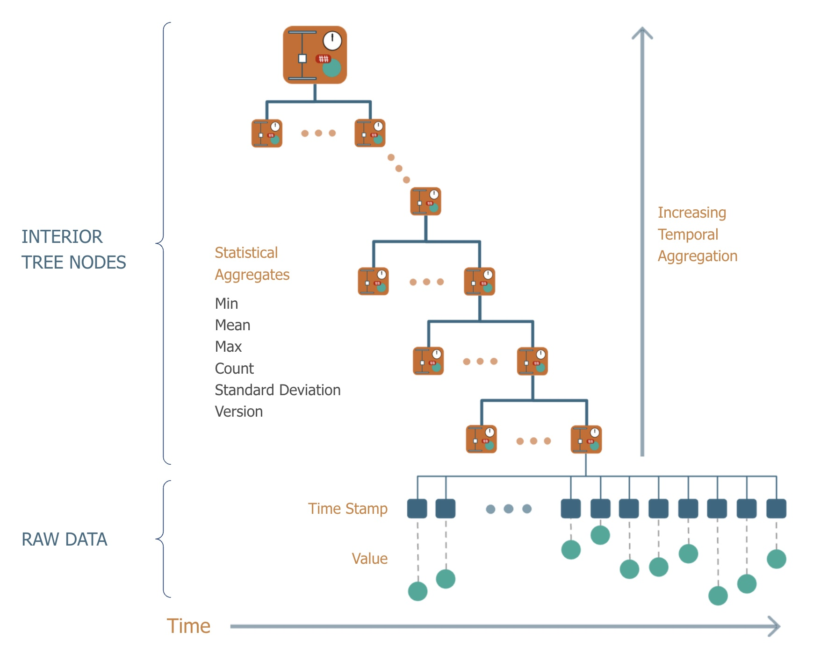

The PredictiveGrid™ Platform
Introduction
High density telemetry or time series data, composed of measurements taken over regular time intervals with high resolution timestamps from electric grid sensors, provides a unique set of challenges for traditional relational databases and even scalable NOSQL data stores like Apache Cassandra. One of the critical metrics is the number of sensor measurements or data points the database can read and write per second per compute resource. The top contemporary time series databases can write approximately 1M points per second per node. For perspective, two hundred PMUs, each with 40 streams of 120Hz high-precision timestamped measurements, generate nearly 1M points per second. Further, some utilities already have more than 5,000 PMUs, not counting other sensors. Even if existing databases could handle the raw throughput required by existing sensor deployments, they cannot satisfy queries over large time ranges efficiently let alone handle the analytical workloads particular to time series data. Thus, the heart of this universal sensor platform needed to be designed for at least this level of performance to ensure that the necessary capabilities - extremely high throughput, fast response times for queries across time scales from milliseconds to years, and the ability to handle messy, out-of-order, real world sensor data and its implications for analytics - are available.
Platform Overview
High density telemetry or time series data, composed of measurements taken over regular time intervals with high resolution timestamps from electric grid sensors, provides a unique set of challenges for traditional relational databases and even scalable NOSQL data stores like Apache Cassandra. One of the critical metrics is the number of sensor measurements or data points the database can read and write per second per compute resource. The top contemporary time series databases can write approximately 1M points per second per node. For perspective, two hundred PMUs, each with 40 streams of 120Hz high-precision timestamped measurements, generate nearly 1M points per second. Further, some utilities already have more than 5,000 PMUs, not counting other sensors. Even if existing databases could handle the raw throughput required by existing sensor deployments, they cannot satisfy queries over large time ranges efficiently let alone handle the analytical workloads particular to time series data. Thus, the heart of this universal sensor platform needed to be designed for at least this level of performance to ensure that the necessary capabilities - extremely high throughput, fast response times for queries across time scales from milliseconds to years, and the ability to handle messy, out-of-order, real world sensor data and its implications for analytics - are available.
{kind=link}
The platform can be decomposed into several functional areas. Moving from left to right in the diagram, it supports the ingestion of both streaming and historical data archives in a wide range of formats at scale via the ingest engine. Data is ingested into a database specifically designed for dense time series sensor data, the Berkeley Tree Database (BTrDB) whose development was funded by the ARPA-E Micro Synchrophasors for the Distribution System project. Further, the platform contains a distributed analytics and computational framework designed to operate across time series in parallel, executing significantly faster than real time to handle both real time and historical analyses and the training of machine learning and deep learning algorithms. The platform provides numerous APIs that provide not only a direct connection for web applications including a data explorer, dashboards, and Jupyter Notebooks for ad-hoc analytics but also to utility planning and operations software, allowing for the seamless integration of highly novel algorithms with the real world. The sections below will describe each component in detail.
Ingestion
Real-time Streaming, Asynchronous, or High Speed Historical Input
The platform’s ingest engine handles two general types of data ingest each with unique requirements. The first type is data continuously streaming from real or virtual sensors. For streaming data ingest, the platform supports a broad range of standards including the nearly ubiquitous IEEE C37.118 for phasor measurement units and also file-based data transfers. The following transport and message protocols will be supported in the near future for data ingestion: GEP, IEC 61850, Modbus, DNP3, GOOSE, and GSSE. The platform’s open-source and modular nature allows for third-party contributions, speeding support of new protocols. As the number of sensor data formats is large, the ingest engine’s ability to rapidly develop and test data import from a new format is key. Equally important are tight, continuous data quality assessments of the actual sensor measurements to identify immediately any potential errors, including those in the ingestors.
Large archives from historians and other legacy systems are the second type of data that must be ingested by the platform, often for retrospective data analyses or to pre-populate the platform before receiving new streaming data. These data files, often terabytes in size, arrive in archive formats such as COMTRADE, Open Historian version 1 (.d files) and version 2 (.d2 files), and comma separated value files (CSV). Along with these common formats are several vendor- or utility-specific formats like PDAT developed at Bonneville Power Authority (BPA). As these large archives often represent multiple years of data for an entire utility, ingest must occur significantly faster than real time. Even at 100x real time, a year of historical data still requires over 3.5 days to be ingested into a platform.
Storage
BTrDB: The Berkeley Tree Database
All of these innovations have led to the creation of a time series database at the heart of the universal sensor platform that has state-of-the-art performance. Early benchmarks demonstrated a throughput of 53 million inserted values per second and 119 million queried values per second on a small, four-node cluster. More recent testing has shown that the system can support over 100,000 simultaneous PMUs, each providing at least 20 streams of 60Hz data. Since these benchmarks were taken, numerous improvements have been made to the database and these numbers are considered a lower bound. Additionally, the database itself has been fully parallelized so that additional nodes can be added to handle extra sensors without any performance decrease.
A New Data Structure for Time Series
To meet the requirements described above, a novel data structure for time series data was created—a time-partitioning, copy-on-write version-annotated k-ary tree—and implemented by the Berkeley Tree Database (BTrDB). Sensor data is intrinsically temporal data queried based on time ranges. The use of a time-partitioning tree not only allows for the efficient location of specific points but also creates an implicit index to the data without additional storage space, increasing overall system throughput (Andersen 2016).
The raw measurements and timestamps are stored in the leaves at the bottom of this tree. Each higher level of the tree summarizes the child nodes below it.These nodes store statistical aggregates that originally included the min, mean, max and count of the number of data points. As data changes, the relevant aggregates are all efficiently recomputed while in memory. As the tree itself represents time, querying higher levels of the tree is asking the database for aggregations (rollups in time series parlance) over larger and larger time intervals. Thus, sensor measurements over a year, a month, a week, a day, a second are available nearly instantaneously to any user or application.
{kind=link}
The tree is copy on write; each time new data points are inserted a new copy of the tree is made accessible via a new root node. This allows the platform to retain all historical data and all versions of the tree require equal effort to access (there is no penalty for older versions of the data). A user can query the exact state of each and every data stream from any point in its past, much like version control for source code in such systems as Git. Thus, a data stream can literally be “rewinded” to learn how data flowed into the system. Further, the database can be queried for a “change set”—the changes that have occurred since a particular version—enabling performant answers to questions like “what data has arrived since yesterday?”
Data Compression
Lossless compression reduces the storage requirements and consequently the financial burden of high frequency sensor data while still preserving the full fidelity of the measurements for future use. While lossless time series compression is a well-developed field, many existing algorithms have not been applied to grid data. Compressing PMU data is a priority due to the associated data volume and the fact that the behavior of the underlying physical process follows well understood statistical distributions, offering high compressibility. Klump explores the performance of off-the-shelf algorithms on PMU data; however, these algorithms compress complete data sets after the data has been collected (as is done on images). Other proposed algorithms for PMU data compression, leverage the low dimensionality of PMU measurements to achieve high compression ratios but also require non-streaming data and are lossy. A universal sensor analytics platform must be able to compress streaming, floating-point data in a lossless fashion, rather than compressing the complete data set after it is recorded. A scheme with these attributes is described by Andersen in 2016 as part of the original BTrDB implementation. It achieves an average compression ratio of 2.9 for PMU sensor measurements. This algorithm has since been evolved using techniques from other fields to approach a lossless compression of up to 10 to 1.
Analytics, Machine Learning, and Deep Learning
Moving computation to the data is one of the hallmarks of big data systems and processing time series data at scale is no different. Thus, analytics and machine learning must be core components or “first-class citizens” of the platform. This is one of the fundamental reasons why it is impossible to add or “bolt on” real time analytics, let alone machine learning capabilities, to legacy systems with non-scalable architectures. Further, processing real world sensor data at scale brings additional, unique challenges for analytics.
The analysis of sensor data occurs in one of two modes: (1) real-time, processing the data as it arrives (synchronously) or (2) retrospective or historical, processing a fixed amount of the data after it has arrived into the system (asynchronously). Both require rapid processing of the data. However, real time (1) processing establishes an explicit time budget for each computation, much like rendering a three-dimensional scene in a movie or video game at 30 frames per second. For the movie or game to not stutter, each frame must be completed within 1/30 of a second. A sensor analytics platform that offers real time processing must offer such processing to all streams. While processing a single stream in real time may seem trivial, handling a million streams in real time is not and requires orders of magnitude additional computational resources and bandwidth. Retrospective or asynchronous processes often require the analysis of a large volume of data significantly faster than real time.
Many traditional engineering analytics for sensor data apply a function to each data point or window of data points in one or more time series. A simple example of this is the calculation of frequency from phase angle data. Frequency is computed from a single input time series as the derivative of the phase angle measurement. A more complex analytic example is reactive power, which is computed from four measurement time series: the voltage and current phasors each consisting of a magnitude and a phase angle. However, analysis often requires the application of not one but a sequence of such functions. For example, a cleaning algorithm may first remove anomalous measurements from a voltage magnitude stream and then the “cleaned” version is passed through a function to compute the fundamental power. A universal sensor analytics platform must apply and orchestrate these types of functions in the appropriate sequence to thousands of data streams simultaneously while handling out-of-order updates to the individual data streams all in real time or to large historical data sets.
{kind=link}
To meet these requirements, DISTIL was created enabling the rapid development of scalable analytics pipelines with strict guarantees on result integrity despite non-synchronous data changes. DISTIL is composed of two separate components:
- Distillers that implement the functions or transformations applied to the sensor data and
- The distillate processing framework that handles the performance optimizations and bookkeeping associated with multiple interleaved streams arriving at different rates, possibly out of order, chunking, buffering, scheduling and more.
Distillers are the “user-facing” portion of DISTIL. At the heart of each distiller is a smaller kernel that contains two functions; (1) the precompute allows the user to specify the data needed for the (2) compute function that will operate on the data and return the computed values and associated time ranges. Each distiller can emit one or more new time series called “distillates” that are fed back into BTrDB. This computational model covers a tremendous number of potential algorithms and operations that can be performed on time series data.
This architecture focuses on efficient and reliable calculation and storage of these “distillates” in advance of queries, rather than just-in-time materialization. The advantage is that many months or years of analytical results can be queried in milliseconds. Moreover, everything is versioned: the data, the distillers, and the intermediate streams. As a change occurs, the framework determines what needs to be recomputed to produce consistent results with precise provenance and schedules the processing required to propagate the change through associated streams. Figure 4 shows numerous distillers cleaning and transforming voltage and current phasors and feeding the generated data streams into additional distillers to facilitate more complex analytics and calculations.
The raw measurements and timestamps are stored in the leaves at the bottom of this tree. Each higher level of the tree summarizes the child nodes below it. These nodes store statistical aggregates that originally included the min, mean, max and count of the number of data points. As data changes, the relevant aggregates are all efficiently recomputed while in memory. As the tree itself represents time, querying higher levels of the tree is asking the database for aggregations (rollups in time series parlance) over larger and larger time intervals. Thus, sensor measurements over a year, a month, a week, a day, a second are available nearly instantaneously to any user or application.
The tree is copy on write; each time new data points are inserted a new copy of the tree is made accessible via a new root node. This allows the platform to retain all historical data and all versions of the tree require equal effort to access (there is no penalty for older versions of the data). A user can query the exact state of each and every data stream from any point in its past, much like version control for source code in such systems as Git. Thus, a data stream can literally be “rewinded” to learn how data flowed into the system. Further, the database can be queried for a “change set”—the changes that have occurred since a particular version—enabling performant answers to questions like “what data has arrived since yesterday?”